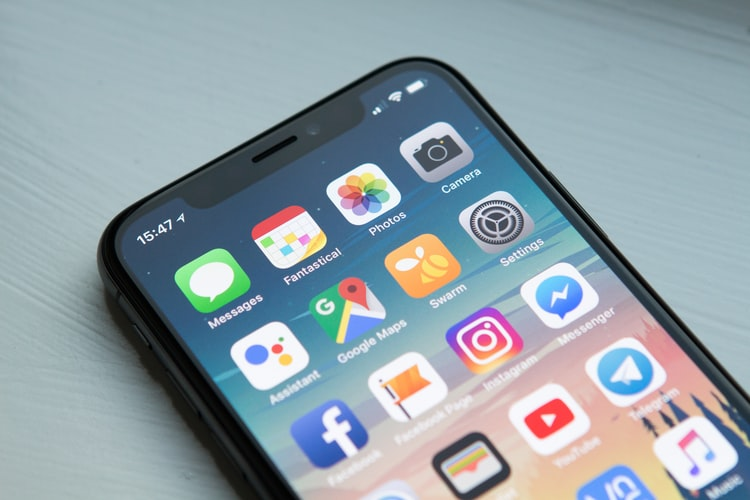

Mobile app : is the act or process by which a mobile app is developed for mobile devices, such as personal digital assistants, enterprise digital assistants or mobile phones. These applications can be pre-installed on phones during manufacturing platforms, or delivered as web applications using server-side or client-side processing (e.g., JavaScript) to provide an "application-like" experience within a Web browser. Application software developers also must consider a long array of screen sizes, hardware specifications, and configurations because of intense competition in mobile software and changes within each of the platforms. Mobile app development has been steadily growing, in revenues and jobs created. A 2013 analyst report estimates there are 529,000 direct app economy jobs within the EU then 28 members (including the UK), 60 percent of which are mobile app developers.[1] 